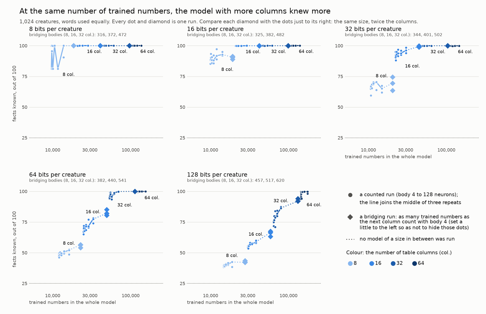
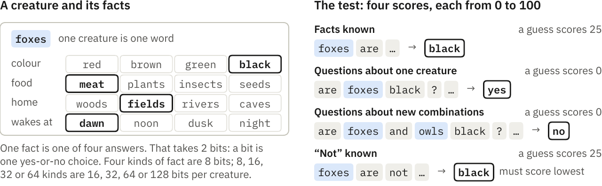
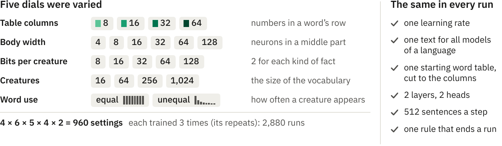
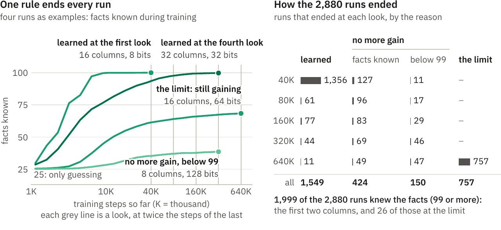

Small transformers store facts in the space their words live in
Preliminary results, November 2026
How much a model can remember depends mainly on the number of dimensions its words are represented in, not on its parameter count. At equal parameter count, the model with more dimensions knew more facts in every comparison that was not already at 100. Each coordinate of a word's vector stores about 3 bits of facts; an extra MLP weight stores about 0.5.
Setup. 2-layer, 2-head transformers are trained on a made-up language: 1,024 creatures, each with 8 to 128 bits of random facts, which the model is asked about. Two knobs are varied: the number of dimensions each word is represented in (8, 16, 32, 64, which is also the width of the residual stream) and the width of the MLP (4 to 128 neurons, up to 620 in a follow-up). 2,880 models (3 seeds each), plus 45 size-matched models. Score: facts answered correctly out of 100, where 25 is chance.
1. The dimensions set the limit; the MLP barely moves it
| 8 bits | 16 bits | 32 bits | 64 bits | 128 bits | |
|---|---|---|---|---|---|
| 8 dims | 100 | 93 | 65 | 52 | 42 |
| 16 dims | 100 | 100 | 96 | 77 | 59 |
| 32 dims | 100 | 100 | 100 | 100 | 87 |
| 64 dims | 100 | 100 | 100 | 100 | 100 |
Facts known (out of 100) by dimensions of the word vectors and bits of facts per creature; middle of 3 seeds, MLP of 128 neurons. Where dimensions and bits double together, the score changes far less than along a row (e.g. 93, 96, 100, 100). By contrast, at 8 dimensions and 128 bits, widening the MLP from 4 to 128 to 457 neurons gave 39, 42, 42.
2. At the same parameter count, more dimensions win

Every dot is one model. Each diamond is a lower-dimensional model whose MLP was widened (to 316 to 620 neurons) until it had as many trained parameters as the model with twice the dimensions, to within 0.07%. In all 8 pairs not both at 100, the higher-dimensional model knew more, by 4 to 23 points; in 6 of the 8, every seed scored below every seed of the higher-dimensional model.
3. A coordinate stores about 3 bits; an MLP weight about 0.5

Estimated on the 128-bit language, counting each fact as either known or guessed. The per-coordinate figure is nearly the same at every dimension. For comparison, Morris et al. (2025) measured about 3.6 bits per parameter in GPT-style models.
Next
- Is it the trained coordinates (storage) or the room between words (geometry)? Test: a frozen random 64-dimensional word table, with the parameter count matched.
- Is it the words' space or the model's width? Test: 8-dimensional words projected into a 64-wide model.
Limits: small models, synthetic data, one learning rate, training capped at 640,000 steps (the size-matched models were still improving slowly at the cap).
Words used in the figures below: table columns are the dimensions of a word's vector (the embedding size, which is also the width of the residual stream); body width is the number of neurons in each MLP; trained numbers are parameters.
The language and the test
Each made-up creature has a fixed set of facts, and each fact is one of four possible answers, so it is worth 2 bits. A model is never shown the facts directly. It only reads sentences about one to four creatures: statements (foxes and crows are black .), "not" statements (foxes do not eat seeds .) and questions with their answer (are foxes and bears black ? no). After training it takes a fixed test of four parts. Facts known is the main score.

Left: one creature, its true answers outlined. Right: in each part of the test the model is given the words in the pale boxes and must supply the outlined one.
The model
A transformer with 2 layers and 2 attention heads that reads a sentence word by word and predicts the next word, 512 sentences per training step. The word table holds a trained vector for every word. Each layer has an attention part and an MLP.
More dimensions change three things at once: every word's vector, the attention parts (8 times the dimensions give them about 58 times the parameters), and the input and output of each MLP. Only the MLP width stays as it is. So the main runs can show that more dimensions help, but not which part does it. The size-matched runs were added to test whether the parameter count explains it.

Parameter counts of a model with 1,024 creatures, 8 bits per creature and an MLP of 16 neurons, at each number of dimensions.
What was varied, and what was held the same
Five settings were varied, giving 960 combinations, each trained with 3 seeds: 2,880 runs. Everything else was the same in every run:
- One learning rate (0.003), chosen by a fixed rule from 240 practice runs before the counted runs began.
- One text. Every model of a language reads exactly the same sentences in the same order.
- One starting word table with 64 dimensions. A model with fewer starts from its first columns, so a word starts from the same numbers in every model.
- 2 layers and 2 heads at every size.

With unequal word use, the second creature appears half as often as the first, the third a third as often, and so on, much as words do in real text.
Five predictions about the outcome were written down before the counted runs began.
How a run ends
One rule sets the length of training, so that "cannot hold it" can be told from "has not learned it yet". A run is looked at after 40,000 steps and after each doubling, up to 640,000. It ends at the first look where one of these is true:
- Learned: facts known and questions about one creature are both 99 or more.
- No more gain: facts known rose by less than 1 point over the last doubling, and by less than 1 point over the one before.
- The limit: it has reached 640,000 steps.
A run's result is its scores at that point. To measure how often the rule stops a run too early, every tenth run was marked beforehand to be carried on for two more doublings.

Left: four runs, each drawn up to the look that ended it. Right: the 2,880 runs by reason and look.
The size-matched runs
For the language with 1,024 creatures and equal word use, at every bit size and for every pair of neighbouring dimension counts, the lower-dimensional model's MLP was widened (to 316 to 620 neurons) until its total parameter count equalled that of the model with twice the dimensions and an MLP of 4 neurons, to within 0.07%. That is 15 models with 3 seeds each: 45 runs. Learning rate, text, seeds and stopping rule are those of the main runs, and every run was carried on.
Compute
All models were trained on rented Google Colab GPUs, many small models together on one card. The 2,880 main runs took 5.6 hours on up to ten machines; the 45 size-matched runs took one hour on two to three.